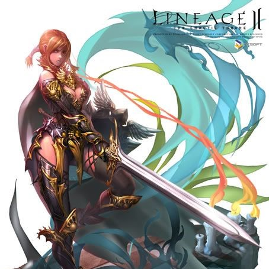
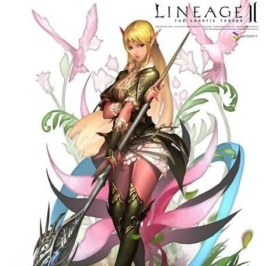
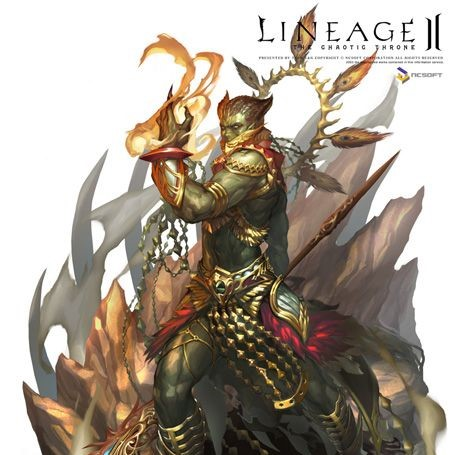
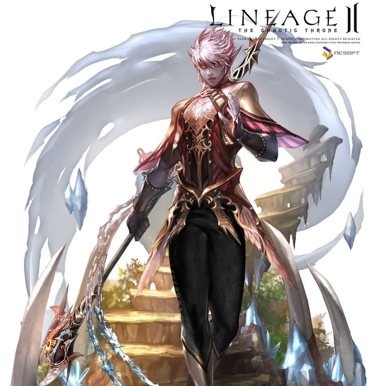
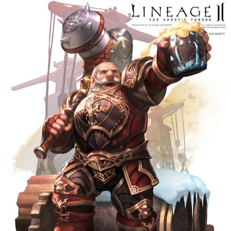
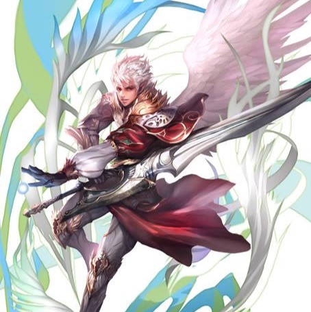

Cadastrar
Download
História
Classes
Dicas e Tutoriais

Humano
Possuem uma variedade de classes maior do que as outras raças e seu status inicial é bem balanceado.

Elfos
Os magos possuem o maior cast speed do jogo e os arqueiros e daggers uma grande probabilidade para críticos alem de ter a maior velocidade do jogo.

Orcs
Possuem habilidades de combate físico realmente acima do normal, como o Destroyer que pode chegar em alguns instantes no maior P.atk do jogo.

Dark Elfos
Possuem o status inicial de maior ataque físico e maior ataque mágico (STR e INT) em relação às outras raças. A classe Blade Dancer é um dos melhores suportes do jogo.

Dwarfs
Possuem ótimo HP e por habilidades como Spoil ou Craft conseguem juntar mais dinheiro do que outras raças.

Kamael
Possuem habilidades únicas e uma jogabilidade diferenciada das demais raças, além do gráfico das skills serem muito bem trabalhados o que deixa os jogadores fascinados.